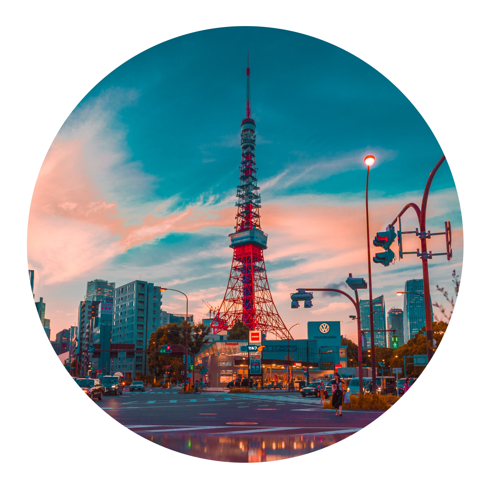

-

Tokyo
the political and economic center
-

Osaka
the street food capital of Japan
-
Kyoto
the former capital of Japan
-

Nara
another historic Japanese capital
the political and economic center
the street food capital of Japan
the former capital of Japan
another historic Japanese capital